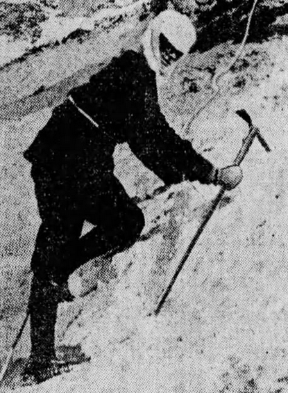

"Milestones" der Bergsteigerischen Erschließung
Einführung
Im Folgenden werden die "Milestones" der Bergsteigerischen Erschließung genauer erläutert und verortet.
Mont Ventoux im Jahr 1336
Dichter Francesco Petrarca bestieg den Mont Ventoux (1909 m) in der Provence am 26. April 1336.
...
Erstbesteigung des Mont Aiguille im Jahr 1492
Antoine de Ville im Dienst von König Karl VIII.
...
Im Jahr 1779: Murith bestieg den Mont Vélan (3731 m ü NN.)
Abbé Lau-rent-Joseph Murith bestieg in Begleitung von zwei Gemsjäger Moret und Genoud den Mont Vélan.

...
Erstbesteigung des Mont Blanc
Mont Blanc (4810 m, höchster Gipfel der Alpen und Westeuropas) gilt allgemein als Geburtsstunde des Alpinismus.
...
1811: Erstbesteigung der Jungfrau (4158 m. ü. NN.)
Gilt als erste Besteigung eines Schweizer Viertausenders.
Bestiegen durch Johann Rudolf Meyer aus Aarau, dessen Bruder Hieronymus und zwei Führern.
Live-Webcam-Foto auf den Aletschgeltscher:

Die Goldenen Jahre des Alpinismus
Im Jahr 1865 waren - mit Ausnahme der Meije - alle bedeutenden Alpengipfel bestiegen.

Einer einflussreichsten Alpinisten seiner Zeit war Leslie Stephen.
Stephens hat seine Erstbegehungen in seinem 1871 veröffentlichten "Buch The Playground of Europe" beschrieben. Zu diesen Erstbesteigungen zählen Schreckhorn (siehe obenstehendes Bild), Blümlisalphorn, Bietschhorn, Rimpfischhorn, Zinalrothorn, Monte Disgrazia,Montblanc, die Erstüberquerung des Jungfraujochs usw. .

In den frühen 1900er Jahren wurde Barnicoat zu einer der bekanntesten Bergsteigerinnen der Welt.
Die Silbernen Jahre des Alpinismus
Die Silbernen Jahre des Alpinismus waren von 1865 bis 1882.
Die Silbernen Jahre des Alpinismus waren von 1865 bis 1882.
Die Meije - der letzte unbestiegene "bedeutende Alpengipfel" der damaligen Zeit - wurde im Jahr 1877 durch Boileau de Castelnau bestiegen.